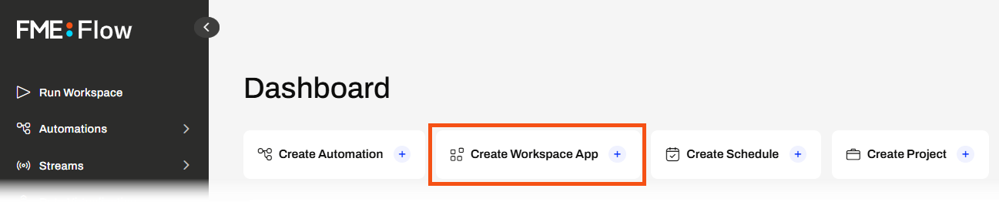
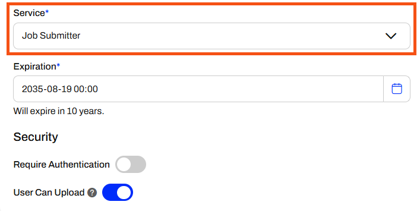
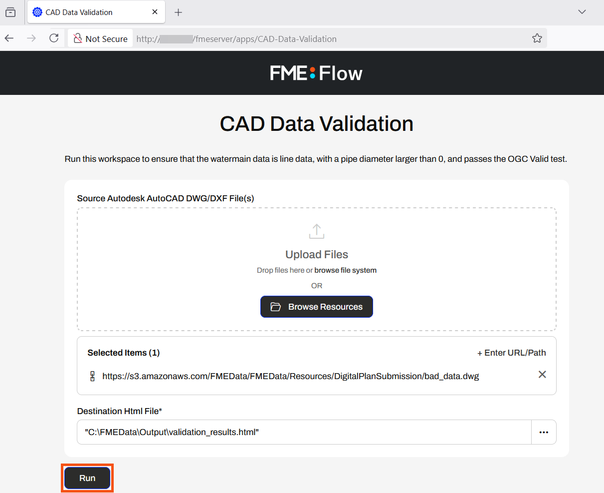
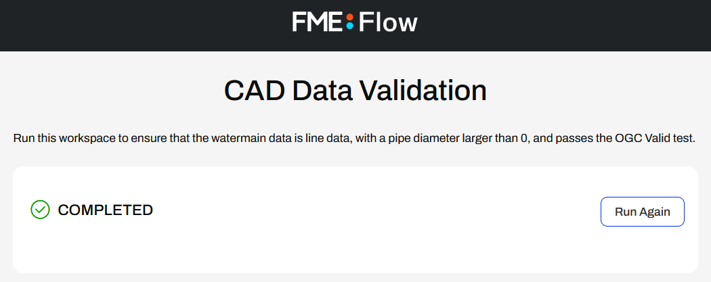

After completing this lesson, you’ll be able to:
Workspace Apps run a single FME workspace through the app interface.
Jennifer, a GIS specialist, is creating a self-serve data portal. She aims to have her colleagues upload their CAD data and validate it against rules. She will use a Workspace App to share the workflow with her colleagues and allow them to run the FME workspace without needing any FME experience or knowledge.
She has already published her workspace to FME Flow and will now create the Workspace App. Follow along with Jennifer's steps.
Jennifer opens a web browser and navigates to FME Flow. She logs in to FME Flow with her credentials.

How you log into FME Flow will depend on the FME Flow instance you are using.
If you are taking a Safe Software-hosted training course, you can access FME Flow at http://localhost/fmeserver.
- Username: admin
- Password: FMElearnings
If you are not taking a Safe Software-hosted course, have just installed your FME Flow, and haven’t logged in yet, you must use the default username/password, admin/admin. After entering the default username/password, FME Flow will prompt you to create a new password for the admin user account. Then log in using the username admin and your new password. Because this is a fresh install, you must also license FME Flow before continuing; see the FME Flow Licensing Walk-Through for instructions.
If you are using FME Flow Hosted, see these instructions.
From the FME Flow Dashboard, Jennifer clicks the Create Workspace App shortcut.

The Create Workspace App page opens, and Jennifer starts by giving her app a name and title.

For the Description, Jennifer describes what the workspace does in a sentence.
Run this workspace to ensure that the watermain data is line data, with a pipe diameter larger than 0, and passes the OGC Valid test.Next, Jennifer selects her workspace. She's stored it in the Data Validation Repository, so she selects it, and then the CAD_Data_Validation.fmw workspace.

Jennifer sets the Service to Job Submitter and leaves the remaining settings as default.

Jennifer expands the Parameter Defaults section. The first parameter takes AutoCAD file(s) as input to the workspace, and the second allows the user to define an output location for the HTML report of validation results. Jennifer leaves the parameters set to Use Default and set to Show in App.

Jennifer skips the Customize section, scrolls to the bottom of the form, and selects Create.

FME Flow creates the app and displays Jennifer a URL and additional security information about the app. Jennifer clicks the URL to open the app in a new browser tab.

The app opens and shows the two parameters for the user to configure. Jennifer does not change the default values and clicks Run.

If you cannot access C:\FMEData on the server hosting your FME Flow, change the Destination HTML file parameter to a file location you can access.
FME Flow submits the workspace to an FME Engine, and the app displays that it is Running as FME Flow processes the workspace.

After the translation, FME Flow displays Completed back to Jennifer in the app.

Jennifer navigates to C:\FMEData\Output\ and opens validation_results.html.

The HTML report displays a map of features that failed validation and a table that records each feature and its reason for failing validation.

Jennifer has created a self-serve data portal where users can upload files and run a workspace to validate CAD data.